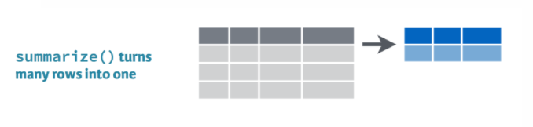

summarize() this

summarize() uses summary functions mean() or sum() to collapse the data down to a single summary row. To get started we’ll need some summary functions like sum(), mean(), min(), and max().
sum()
Use summarize() and sum() to find the total credits of all the scrap combined.
summarize(scrap, total_credits = sum(credits))
mean()
Use summarize() and mean() to calculate the mean price_per_pound in the scrap report.
summarize(scrap, mean_price = mean(price_per_pound, na.rm = T))
Note
What’s the average of missing data? I don’t know.
Did you see the na.rm = TRUE inside the mean() function. This tells R to ignore empty cells or missing values that show up in R as NA. If you leave na.rm out, the mean function will return ‘NA’ if it finds a missing value anywhere in the data.
max()
Use summarize to calculate the maximum price per pound any scrapper got for their scrap.
summarize(scrap, max_price = max(price_per_pound, na.rm = T))
min()
Use summarize to calculate the minimum price per pound any scrapper got for their scrap.
summarize(scrap, min_price = min(price_per_pound, na.rm = T))
sd()
What is the standard deviation of the credits?
summarize(scrap, stdev_credits = sd(credits))
quantile()
Quantiles are useful for finding the upper or lower range of a column. Use the quantile() function to find the the 5th and 95th quantile of the prices.
summarize(scrap,
price_5th_pctile = quantile(price_per_pound, 0.05, na.rm = T),
price_95th_pctile = quantile(price_per_pound, 0.95))
Hint: Add na.rm = T to quantile().
n()
n() stands for count.
Use summarize and n() to count the number of scrap records.
summarize(scrap, scrap_records = n())
Explore!
- Create a summary of the scrap data that includes 3 of the summary functions above. The following is one example.
summary <- summarize(scrap,
max_credits = __________,
weight_90th_pct = quantile(Weight, 0.90),
count_records = __________,
- Use summarize and
n() to count the number of reported scrap records going to Niima outpost.
Hint: Use filter() first.
niima_scrap <- filter(scrap, destination == "Niima Outpost")
niima_scrap <- summarize(niima_scrap, scrap_records = n())
How about a count of the records for every city?
That sounds like a whole lot of summarizing.
It’d sure be nice if we could easily find the mean for every city.
group_by() category
group_by() gives us the power to calculate separate results for each category in the data. This could be the average concentration at each of your monitoring sites, or the total emissions of a pollutant from each facility or stack.
Bargain hunters
Who’s selling goods for cheap? Use group_by with the column Origin to find the mean(price_per_pound) at each Origin City.
scrap_summary <- group_by(scrap, origin) %>%
summarize(mean_price = mean(price_per_pound, na.rm = T))
Rounding digits
Rounding
You can round the prices to a certain number of digits using the round() function. We can finish by adding the arrange() function to sort the table by our new column.
scrap_means <- scrap %>%
group_by(origin) %>%
summarize(mean_price = mean(price_per_pound, na.rm = T),
mean_price_round = round(mean_price, digits = 2)) %>%
arrange(mean_price_round) %>%
ungroup()
Note
The round() function in R does not automatically round values ending in 5 upwards. Instead it uses scientific rounding, which rounds values ending in 5 to the nearest even number. So 2.5 rounded to the nearest even number rounds down to 2, and 3.5 rounded to the nearest even number rounds up 4.
Busiest scrap city
So who’s making lots of transactions? Try using group_by with the column origin to count the number of scrap records at each city.
scrap_counts <- scrap %>%
group_by(origin) %>%
summarize(origin_count = n()) %>%
ungroup()
Spock-tip!
Ending with ungroup() is good practice. This prevents your data from staying grouped after the summarizing has been completed.
Save files
Let’s save the mean price table we created to a CSV. That way we can send it to Rey. To save a table we can use the write_csv() function from our favorite readr package.
# Write the file to your results folder
write_csv(scrap_means, "results/prices_by_origin.csv")
Note
By default, R will overwrite a file if the file already exists in the same folder. To be safe, save processed data to a new folder called results/ and not to your raw data/ folder.
Grouped mutate()
We can bring back mutate to add a column based on the grouped values in a data set. For example, you may want to add a column showing the mean price by origin to the whole table, but still keep all of the records. This is a good way to add values to the table to serve as a reference point.
How does the price of “Item X” compare to the average price?
When you combine group_by and mutate the new column will be calculated based on the values within each group. Let’s group by origin to find the mean() price per pound at each origin.
scrap <- scrap %>%
group_by( _______ ) %>%
mutate(origin_mean_price = mean(price_per_pound, na.rm = T)) %>%
ungroup()
Guess Who?
Star Wars edition

Are you the best Jedi detective out there? Let’s play a game to find out.
Guess what else comes with the dplyr package?
Open the data
- Load the
dplyr package from your library()
- Pull the Star Wars dataset into your environment.
library(dplyr)
people <- starwars
Rules
- You have a top secret identity.
- Scroll through the Star Wars dataset and find a character you find interesting.
- Or run
sample_n(starwars_data, 1) to choose one at random.
- Keep it hidden! Don’t show your neighbor the character you chose.
- Take turns asking each other questions about your partner’s Star Wars character.
- Use the answers to build a
filter() function and narrow down the potential characters your neighbor may have picked.
For example: Here’s a filter() statement that filters the data to the character Plo Koon.
mr_koon <- filter(people,
mass < 100,
eye_color != "blue",
gender == "male",
homeworld == "Dorin",
birth_year > 20)
Elusive answers are allowed. For example, if someone asks: What is your character’s mass?
- You can respond:
- My character’s mass is equal to one less than their age.
- Or if you’re feeling generous you can respond:
- My character’s mass is definitely more than 100, but less than 140.
My character has NO hair! (Missing values)
Sometimes a character will be missing a specific attribute. We learned earlier how R stores missing values as NA. If your character has a missing value for hair color, one of your filter statements would be is.na(hair_color).
WINNER!
The winner is the first to guess their neighbor’s character.
WINNERS Click here!
Time for a rematch?
Feel free to challenge someone new.
Plots with ggplot2
Plot the data, Plot the data, Plot the data

The ggplot() sandwich

A ggplot has 3 ingredients.
1. The base plot

We load version 2 of the package library(ggplot2), but the function to make the plot is plain ggplot(). Sorry, ggplot is fun that like that.
2. The the X, Y aesthetics
The aesthetics assign the columns from the data that you want to use in the chart. This is where you set the X-Y variables that determine the dimensions of the plot.
ggplot(scrap, aes(x = destination, y = amount))

3. The layers AKA geometries
ggplot(scrap, aes(x = destination, y = amount)) +
geom_col()

Colors
Now let’s change the fill color to match the destination.
ggplot(scrap, aes(x = destination, y = amount, fill = destination)) +
geom_col()

Sorting
Finally, let’s order things from lowest to highest.
ggplot(scrap, aes(x = reorder(destination, amount, FUN = sum), y = amount, fill = destination)) +
geom_col() +
labs(x = "Destination",
title = "The most scrap was sent to the Trade Caravan")

Explore!
Try making a scatterplot of any two columns.
Hint: Numeric variables will be more informative.
ggplot(scrap, aes(x = __column1__, y = __column2__)) + geom_point()
Colors
Now let’s use color to show the origins of the scrap
ggplot(scrap, aes(x = destination, y = credits, color = origin)) +
geom_point()

This is a A LOT of detail. Let’s make a bar chart and add up the sales to make it easier to understand.
ggplot(scrap, aes(x = destination, y = credits, fill = origin)) + geom_col()

It’s still tricky to compare sales by origin. Let’s change the position of the columns.
ggplot(scrap, aes(x = destination, y = credits, fill = origin)) +
geom_col(position = "dodge")

More Plots
Colors
Now let’s use color to show the destinations of the scrap.
ggplot(scrap, aes(x = origin, y = credits, color = destination)) +
geom_point()

Yoda says

An easy way to experiment with colors is to add layers like scale_fill_brewer or scale_colour_brewer to your plot. These link to colorBrewer palettes to give you accessible color themes.
Bar charts
This is way too much detail. Let’s simplify and make a bar chart that adds up all the sales. Note that we use fill= inside aes() instead of color=. If we use color, we get a colorful outline and gray bars.
ggplot(scrap, aes(x = origin, y = credits, fill = destination)) +
geom_col()

Let’s change the position of the bars to make it easier to compare sales by destination for each origin? Remember, you can use help(geom_col) to learn about the different options for that plot. Feel free to do the same with other geom_’s as well.
ggplot(scrap, aes(x = origin, y = credits, fill = destination)) +
geom_col(position = "dodge")

Facet wrap
Does the chart feel crowded to you? Let’s use the facet wrap function to put each origin on a separate chart.
ggplot(scrap, aes(x = origin, y = credits, fill = destination)) +
geom_col(position = "dodge") +
facet_wrap("destination")

Labels
We can add lables to the chart by adding the labs() layer. Let’s give our chart from above a title.
Titles and labels
ggplot(scrap, aes(x = origin, y = credits, fill = destination)) +
geom_col(position = "dodge") +
facet_wrap("destination") +
labs(title = "Scrap sales by origin and destination",
subtitle = "Planet Jakku",
x = "Origin",
y = "Total sales")

Add lines
More layers! Let’s say we were advised to avoid sales that were over 50 Billion credits. Let’s add that as a horizontal line to our chart. For that, we use geom_hline().
Reference lines
ggplot(scrap, aes(x = origin, y = credits, fill = destination)) +
geom_col(position = "dodge") +
facet_wrap("destination") +
labs(title = "Scrap sales by origin and destination",
subtitle = "Planet Jakku",
x = "Origin",
y = "Total sales") +
geom_hline(yintercept = 5E+10, color = "black", size = 1)

Drop 2.2e+06 scientific notation
Want to get rid of that ugly scientific notation? We can use options(scipen = 999). Note that this is a general setting in R. Once you use options(scipen = 999) in your current session, you don’t have to use it again. (Like loading a package, you only need to run the line once when you start a new R session).
options(scipen = 999)
ggplot(scrap, aes(x = origin, y = credits, fill = destination)) +
geom_col(position = "dodge") +
facet_wrap("destination") +
theme_bw() +
labs(title = "Scrap sales by origin and destination",
x = "Origin",
y = "Total sales")

Explore!
Let’s say we don’t like printing so many zeros and want the labels to be in Millions of credits. Any ideas on how to make that happen?
Themes
You may not like the appearance of these plots. ggplot2 uses theme functions to change the appearance of a plot. Try some.
ggplot(scrap, aes(x = origin, y = credits, fill = destination)) +
geom_col(position = "dodge") +
facet_wrap("destination") +
theme_bw()

Explore!
Be bold and make a boxplot. We’ve covered how to do a scatterplot with geom_point and a bar chart with geom_col, but how would you make a boxplot showing the prices at each destination? Feel free to experiment with color ,facet_wrap, theme, and labs.
May the force be with you.
Save plots
You’ve made some plots you can be proud of, so let’s learn to save them so we can cherish them forever. There’s a function called ggsave to do just that.
So how do we ggsave our plots?
Let’s try help(ggsave) or ?ggsave.
# Get help
help(ggsave)
?ggsave
# Run the R code for your favorite plot first
ggplot(data, aes()) +
.... +
....
# Then save your plot to a png file of your choosing
ggsave("results/plot_name.png")
Learn more about saving plots at http://stat545.com/
It’s Finn time
Seriously, let’s pay that ransom already.
Q: Where should we go to get our 10,000 Black boxes?
Step 1: Make a geom_col() plot showing the total pounds of Black boxes shipped to each destination.
ggplot(cheap_scrap, aes(x = ______ , y = ______ )) +
geom_
Show code
ggplot(cheap_scrap, aes(x = destination, y = total_pounds) ) +
geom_col()

😻CONCATULATIONS!😻
Woop!
Serious kudos to you.